Managing Imports with OMERO 5
Paris 2014
Mark Carroll, Colin Blackburn & Josh Moore
Outline
- Introduction to OMERO 5
- Advanced import
- Advanced repository layouts
- Discussion
Introduction to OMERO 5
- OMERO 5 Import
- ManagedRepository
- Filesets
- Discussion
OMERO 5 Import

OMERO 5 Data out
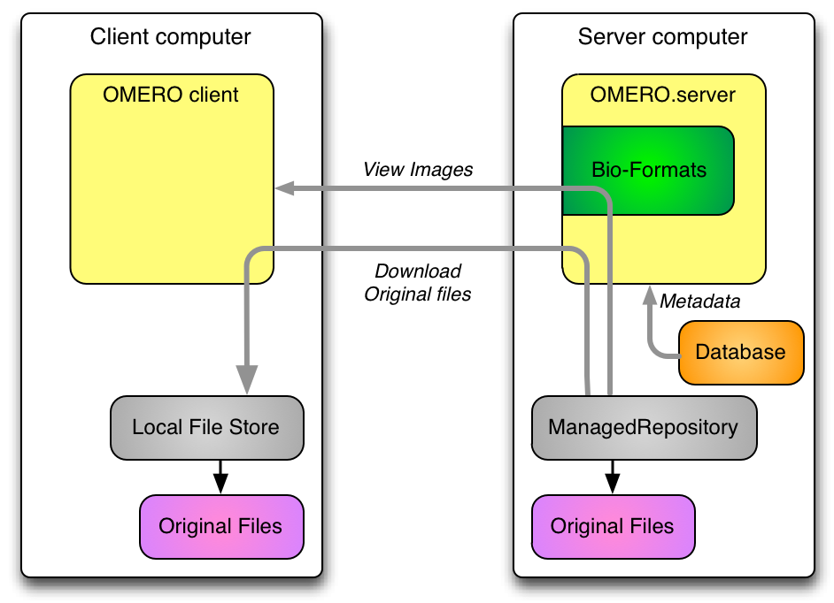OMERO 5 Import: Summary
- client uploads only original data
- including HCS plates, everything is
archived
- server does not store Pixels files
- pyramids stored for few large images
- only those without subresolutions in file
OMERO 5 Data out: Summary
- pixels provided directly from original files
- server-side Bio-Formats
- original files always available for download
- including HCS plates
OMERO 4 Import: Summary
- client sends image planes over the network
- stored as
Pixels
, an internal uncompressed format - additionally, original
archived
files can be stored - though not for HCS plates
- pyramids stored for all large images
ManagedRepository

ManagedRepository: Summary
- server stores and reads original data
- OMERO acts as repository of original data
- without Pixels files, less data duplication
- original data visible in server filesystem
- where filesets live
- each Fileset in its own subdirectory
Migrating to FS
- new OMERO users should use OMERO 5
- upgrade scripts provided from OMERO 4
pre-FS
images still Pixels, not in Filesetsynthetic
images also not in Fileset- for instance: projections, kymographs
Filesets: One to one
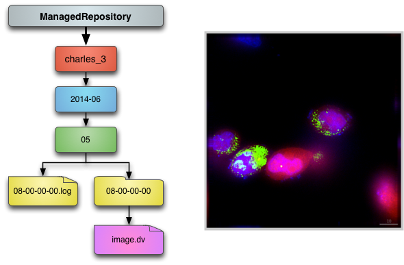Filesets: One to many
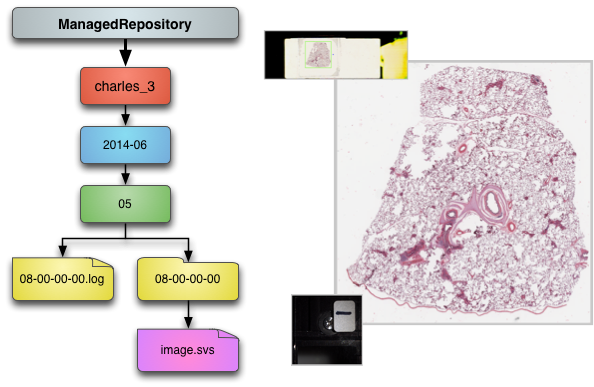Filesets: Many to many

Filesets: Summary
- a set of related files
- Bio-Formats must read them together
- a set of images, arising from those files
- may be just one file and one image
- Project/Dataset, Screen/Plate hierarchy remains
Discussion
- Any questions so far?
- For more details of FS see last year's workshop.
Advanced import
- In-place import
- DropBox import
- Future import
- Container creation
- Cron job import
- Polling DropBox
- Discussion
In-place import: symlink
$ bin/omero import path/to/image -- --transfer=ln_s
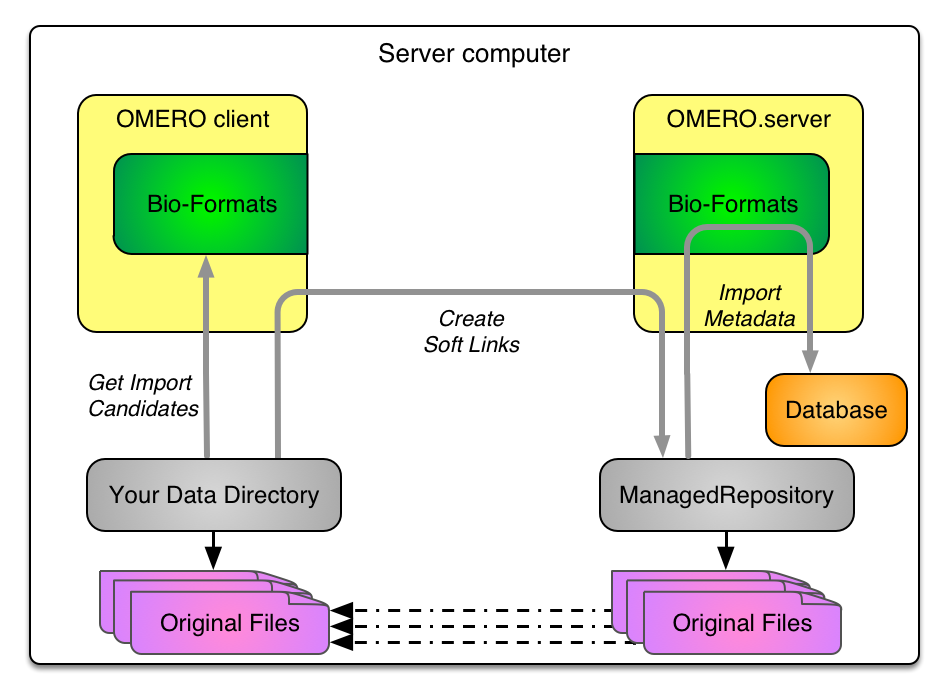
In-place import: hard link
$ bin/omero import path/to/image -- --transfer=ln

In-place import: move
$ bin/omero import path/to/image -- --transfer=ln_rm
In-place import: move
$ bin/omero import path/to/image -- --transfer=ln_rm
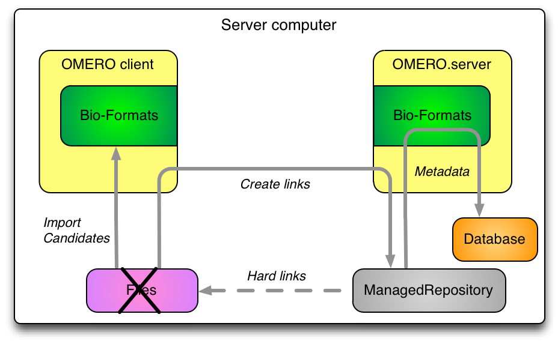
In-place import: Options
$ bin/omero import -- --advanced-help- transfer options
--transfer=upload--transfer=ln_s--transfer=ln--transfer=ln_rm--transfer=some.class.Name- other options
--minutes_wait=ARG--close_completed--wait_completed--checksum_algorithm=ARG-
Adler-32, CRC-32, MD5-128, Murmur3-32, Murmur3-128, SHA1-160
In-place import: Summary
- client transfers original data to ManagedRepository
- uploads - default as already outlined
- creates soft links
- creates hard links
- creates hard links followed by delete of source files
- employs user-defined transfer mode
- server-side import as previously outlined
- Potential for even less data duplication
DropBox: in-place import
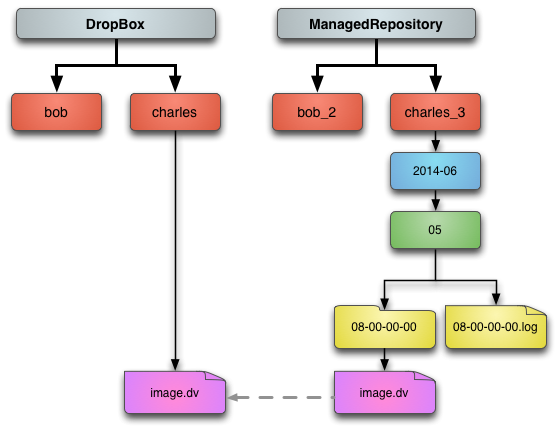DropBox in-place: Summary
- DropBox can be configured to use in-place import
- This can remove server-side duplication
Import: users, groups and containers
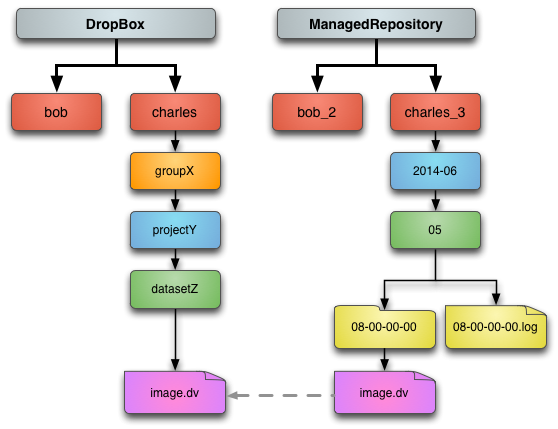Extending DropBox file monitor
- Point at any visible directory
- Run in polling mode
- Use file notification if available
Import future: Summary
- User, group & containers captured in paths
- Can be configured for a cron job
- DropBox run in polling mode
Discussion
- We welcome questions and comments advanced import
- Any further import options?
- What DropBox improvements would be useful?
Advanced repository layouts
- Template basics
- Template uses
- Quotas
- Samba & LDAP mapping
- Adding disks
- Discussion
Default template
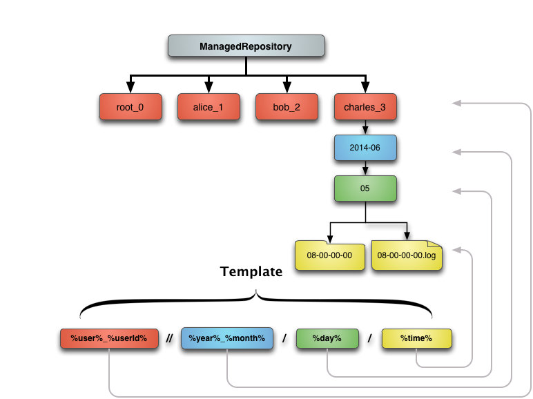Shared system portion
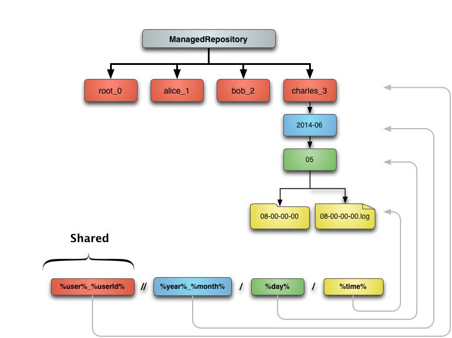User portion
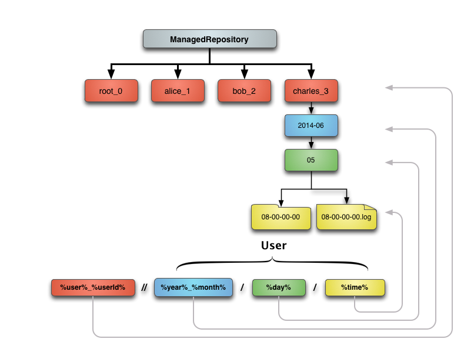Template configuration
in etc/omero.properties
# Template for FS managed repository paths.
# Allowable elements are:
# %user% bob
# %userId% 4
# %group% bobLab
# %groupId% 3
# %year% 2011
# %month% 01
# %monthname% january
# %day% 01
# %time% 15-13-54.014
# / path separator
#
# The path must be unique per fileset to prevent upload conflicts,
# which is why %time% includes milliseconds.
#
# A // may be used as a path separator: the directories preceding
# it are created with root ownership, the remainder are the user's.
# At least one user-owned directory must be included in the path.
#
# The template path is created below <omero.managed.dir>,
# e.g. /OMERO/ManagedRepository/<omero.fs.repo.path>/
omero.fs.repo.path=%user%_%userId%//%year%-%month%/%day%/%time%
|
Template configuration
...
# The template path is created below <omero.managed.dir>,
# e.g. /OMERO/ManagedRepository/<omero.fs.repo.path>/
omero.fs.repo.path=%user%_%userId%//%year%-%month%/%day%/%time%
|
Template configuration
...
# The template path is created below <omero.managed.dir>,
# e.g. /OMERO/ManagedRepository/<omero.fs.repo.path>/
omero.fs.repo.path=%user%_%userId%//%year%-%month%/%day%/%time%
|
Quotas

Quotas: Summary
By adding "%groupId%" at the top of the template, getting diskspace usage per group should be easier. See this forum thread for a discussion on the topic.
Samba: per group

Samba: per user
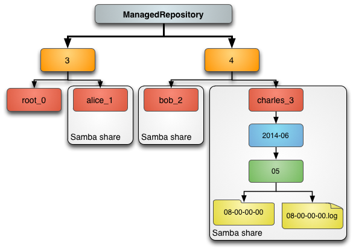Samba: Summary
- /OMERO/ManagedRepository can be mapped via Samba
- Safest for read-only access
- Best if per-user mapping can be applied
Adding disks

Adding disks: Summary
Adding other disks, should be as simple as adding a mount-point under /OMERO/ManagedRepository
Discussion
- We welcome questions and comments on FS:
- Other import scenarios?
- What further work on FS would be most useful?
- Thanks!
Other advanced tasks
- Find your managed repository
- pre-FS -> FS migration
- Java-less import
Finding your ManagedRepository
$ bin/omero fs repos
|
# | Id | UUID | Type | Path
---+------+--------------------------------------+---------+----------------------------------
0 | 1 | c8db8f5c-b6ba-472f-b0d5-3dac4f31be66 | Public | /home/data/ome2
1 | 2 | ScriptRepo | Script | /opt/ome2/dist/lib/scripts
2 | 3 | c4df3508-cffe-4bf2-a1c8-b3c1395f737f | Managed | /home/data/ome2/ManagedRepository
(3 rows)
|
pre-FS -> FS migration
- OMERO4 and before allowed archiving original files
bin/omero fs images --archived- Preparing user script to help conversion
- Limitations